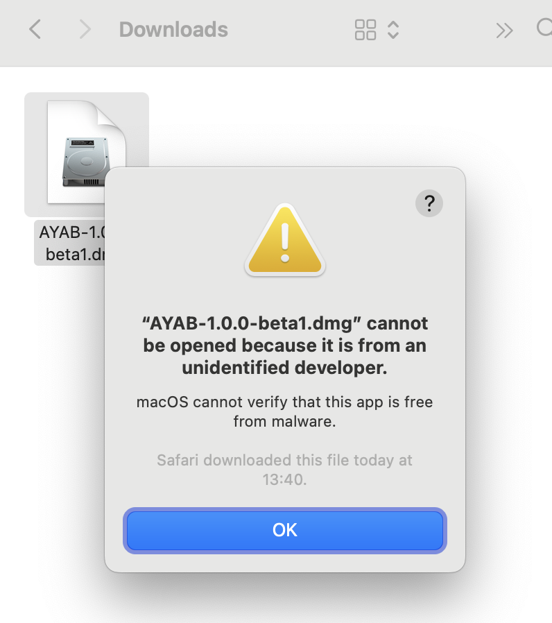
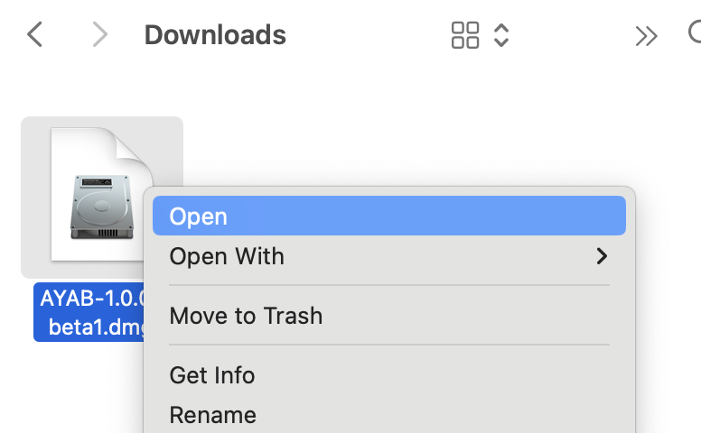
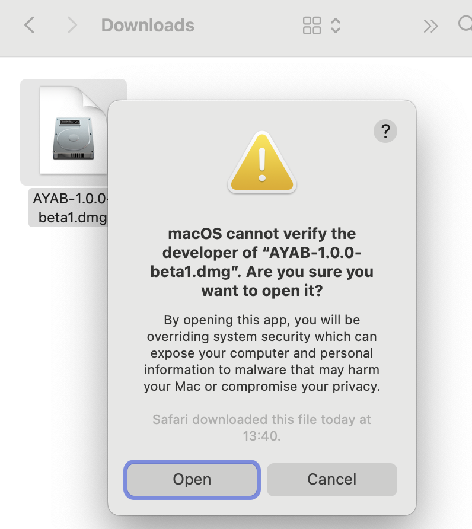
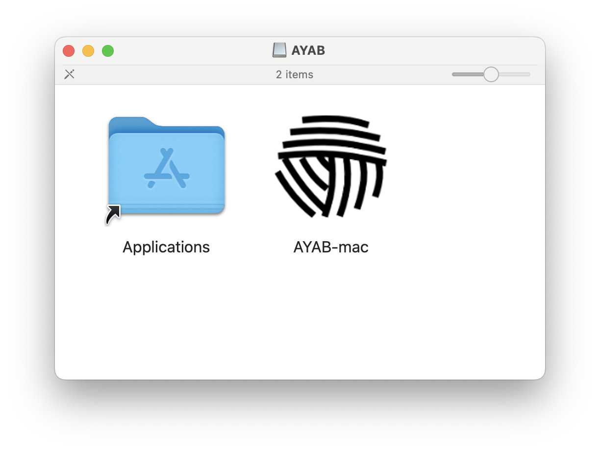
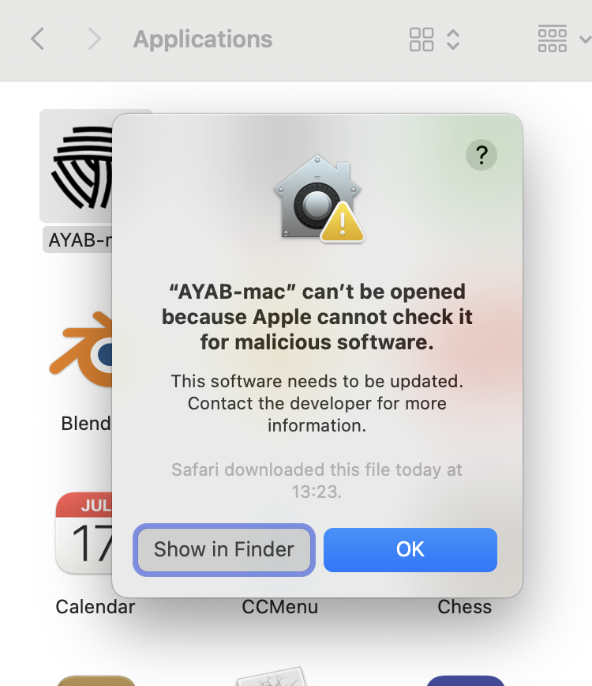
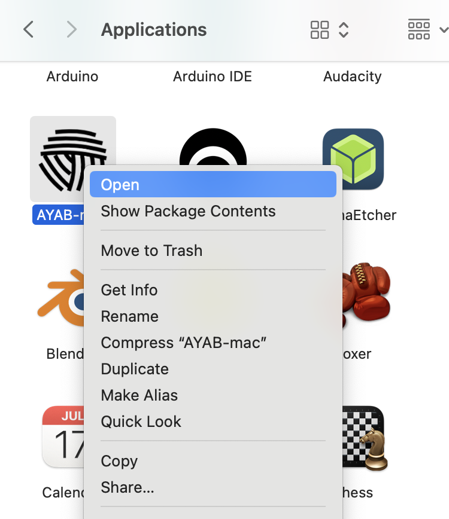
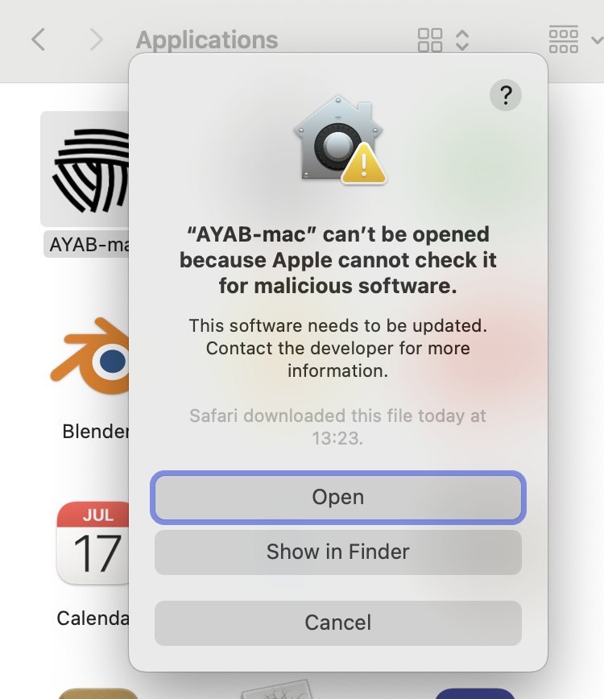

Software
Linux
Prerequisites
AYAB is built with Qt. The official list of supported Linux distributions is published on the Qt website, but most recent distributions should have no problem running AYAB.
The AYAB AppImage includes most dependencies the application needs to run, such as Python and Qt.
If you have a desktop environment running you should be ready to run AYAB as you downloaded it. However, to flash the AYAB firmware to your shield or interface, you'll need to install avrdude, which you can generally install with your package manager:
For Debian/Ubuntu
sudo apt install avrdude
For openSUSE
sudo zypper install avrdude
For Fedora
sudo yum install avrdude
Serial port access permissions
To be able to communicate with your Arduino, it might be necessary to add the rights for USB communication by adding your user to some groups.
sudo usermod -a -G tty [userName]
sudo usermod -a -G dialout [userName]
After doing that you may need to close and reopen your session.
Installation
Download the Linux AppImage from ayab-knitting.com.
Follow the AppImage instructions to make the AppImage executable.
Then you can double-click the AppImage to start AYAB.
You can now head over to Firmware to update your Arduino board.
Windows
Prerequisites
AYAB requires Windows 10 or Windows 11.
USB Serial port setup
Depending on your Windows version and the make of your Arduino board, you may need to install an USB Serial driver. Recent Windows versions should prompt you to install the necessary drivers automatically though, so it's best to first try plugging the board in and see if it is detected as a serial device in AYAB.
If you have trouble getting the board to be detected, installing the Arduino IDE and following its instructions is recommended. Until the board is detected in the Arduino IDE it won't work with AYAB.
Installation
Download the Windows setup from ayab-knitting.com.
Run the setup, install AYAB and run it with the icon on your Desktop.
Important: when choosing the installation directory, make sure that you do not overwrite any previous versions. Remove them or use another folder for installation.
You can now head over to Firmware to update your Arduino board.
macOS
Prerequisites
AYAB requires macOS 11 (Big Sur) or newer.
USB Serial port setup
Depending on your macOS version and the make of your Arduino board, you may need to install an USB Serial driver. Recent macOS versions tend to have all the necessary drivers pre-installed though, so it's best to first try plugging the board in and see if it is detected as a serial device in AYAB.
If you have trouble getting the board to be detected, installing the Arduino IDE and following its instructions is recommended. Until the board is detected in the Arduino IDE it won't work with AYAB.
Installation
Download the macOS dmg file from ayab-knitting.com.
When you double-click the downloaded dmg file, macOS will probably complain that it cannot identify the software:

To open the disk image anyway, you have to hold Ctrl and click (or right-click) the file, and select Open in the pop-up menu that appears:

You should get similar warning dialog as before, but this time with the option to open the disk image anyway:

Once you confirm, you get to see what's in the disk image:

Drag the AYAB icon to the Applications folder shortcut. You can now "eject" the disk image and put it in the trash.
Then run AYAB from your Applications folder. Again, macOS will likely warn you about insecure software:

The workaround is the same. First, click Show in Finder to make the app icon visible in case it is not already. Then, Ctrl-click or right-click the app icon and select Open:

You now get the option of opening the application:

You only have to do this confirmation once. Until you overwrite the app with a different version, macOS will remember you authorized it to run and not bother you again when you run it.
You can now head over to Firmware to update your Arduino board.